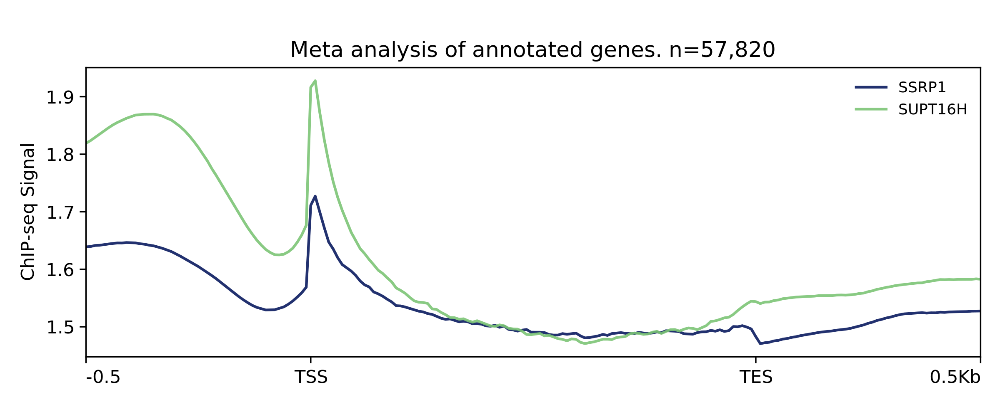
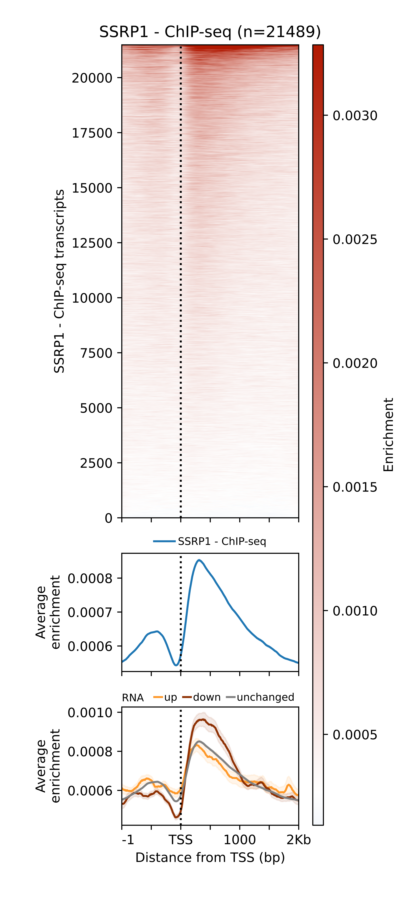
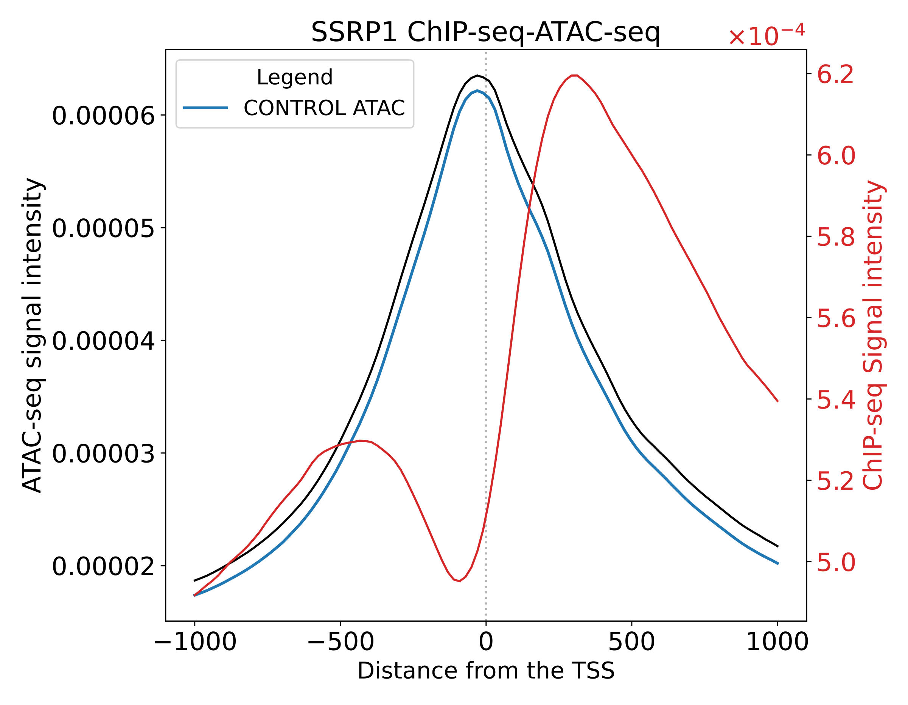
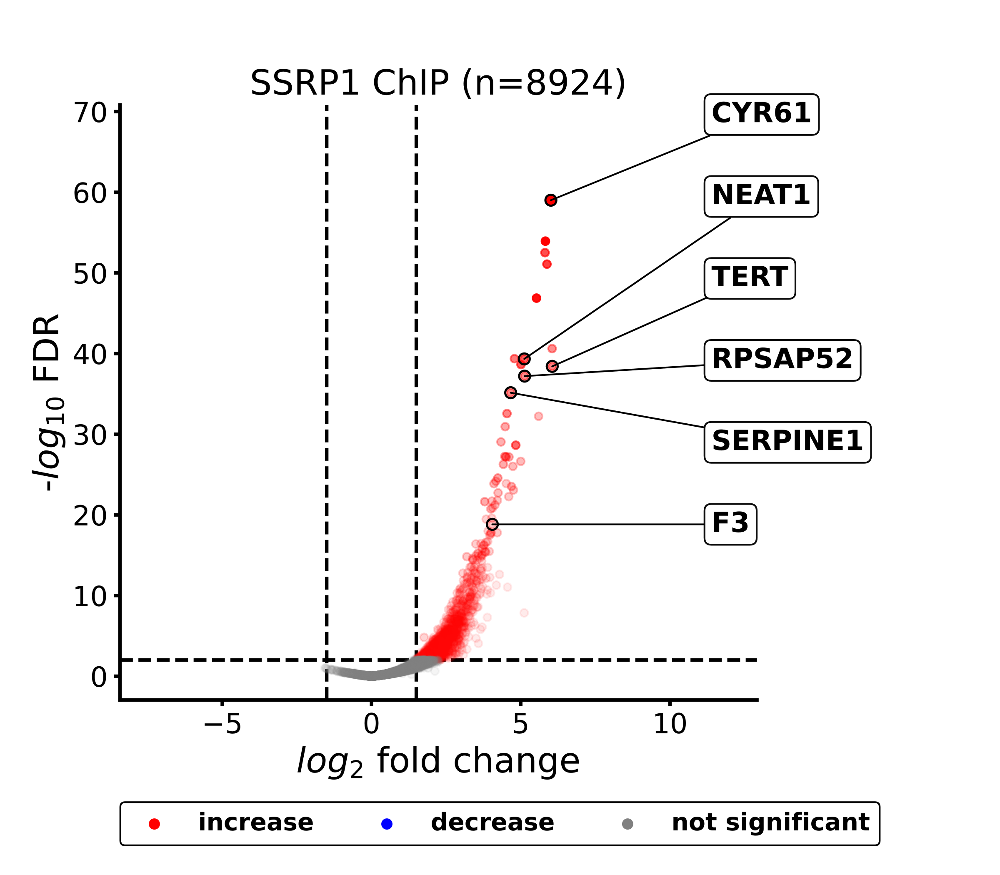
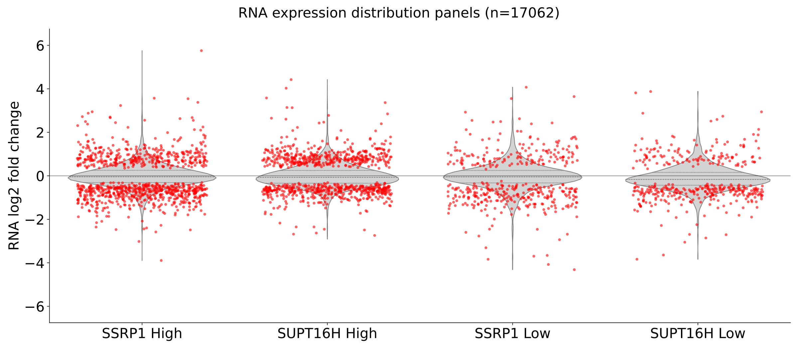
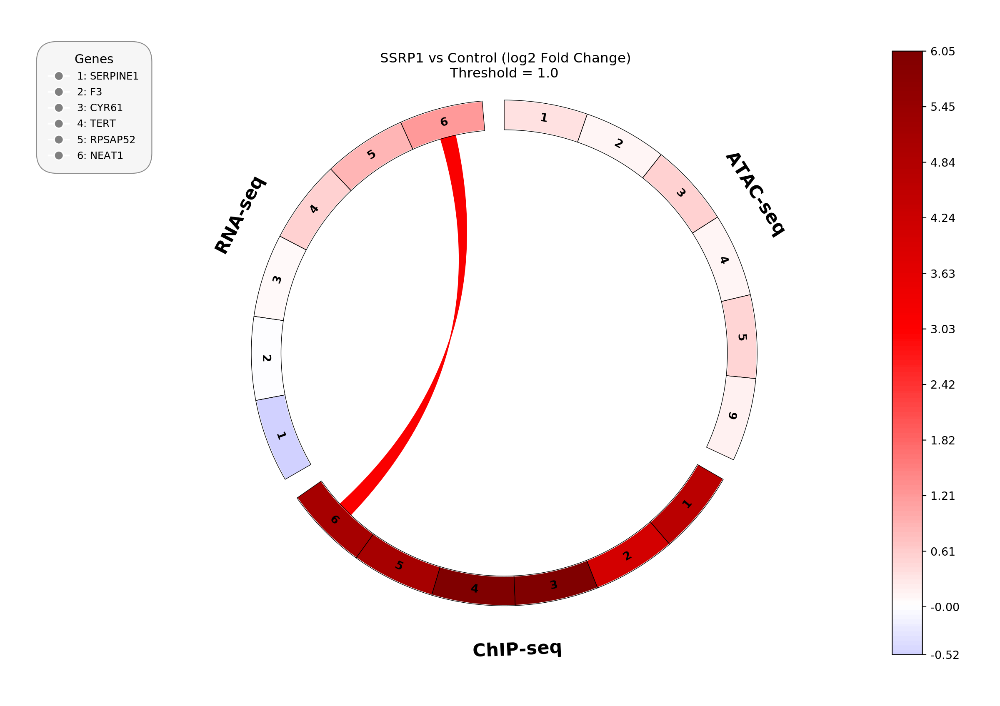

Pyntegrate¶
Integrative analysis of high-throughput sequencing data.
Pyntegrate is a Python library for genomic data analysis, built on the foundation of metaseq, created by Ryan Dale. It extends that foundation to analyze and cross-compare a wider variety of data types (ChIP-seq, RNA-seq, and DNase-seq/ATAC-seq) through a single, consistent API, and turns each common analysis into a one-call pipeline that returns publication-ready matplotlib figures.
Install Pyntegrate Getting Started Examples
Why Pyntegrate?¶
Integrating several sequencing assays usually means juggling a different tool, file format, and plotting script for each one. Pyntegrate brings them under one roof:
-
Multi-omics integration
Combine ChIP-seq signal, ATAC-seq accessibility, and RNA-seq differential expression in the same analysis: split heatmaps by expression status, correlate log2 fold changes across assays, or group genes into ATAC/RNA quadrants.
-
One-call pipelines
Each analysis is a pipeline class: pass file paths and parameters, call
.run(), and get back ready-to-save figures. No separate loading, binning, or plotting step. -
Rich visualization
Heatmaps, meta-gene profiles, dual-axis overlays, volcano plots, decile boxplots, violin plots, hexbin correlations, and circos plots out of the box.
-
Format-agnostic signal
A uniform interface to read BigWig, BAM, BigBed, BED, and NarrowPeak files, plus DESeq2/edgeR-style result tables, with CPM normalization handled for you.
-
Gene and peak annotation
Classify genomic regions (promoter, intergenic, ...) from interval data and, optionally, call and annotate peaks through HOMER.
-
Low-level access when you need it
Every pipeline is built from public building blocks (
SignalArrayGenerator,Plotting,Filtering, ...) that you can call directly for custom workflows.
Supported Data Types¶
| Data type | Typical input | What Pyntegrate does with it |
|---|---|---|
| ChIP-seq | BigWig / BAM | Signal extraction around TSS, IP − INPUT subtraction, heatmaps, profiles, log2FC correlations |
| RNA-seq | CSV/TSV (DESeq2-style) | Differential-expression parsing, volcano plots, decile and violin analysis, up/down gene splits |
| DNase-seq / ATAC-seq | BigWig / BAM / CSV | Accessibility signal extraction, category heatmaps, overlay profiles, knockdown correlations |
Supported file formats¶
| Format | Support level |
|---|---|
bigwig, bam |
Full functionality, including read counting and signal extraction |
bed, bigbed, narrowPeak, gff, gtf, vcf |
Most functionality, but no read counting |
csv / tsv |
Full functionality for differential-expression tables (RNA-seq, ATAC-seq, ChIP-seq log2FC) |
gffutils .db |
Gene annotation database used to locate TSSs and gene bodies |
How It Works¶
flowchart LR
A[Signal files<br/>BigWig / BAM / BED] --> P
B[Annotations<br/>gffutils .db] --> P
C[DE tables<br/>CSV / TSV] --> P
P["Pipeline<br/>(e.g. IntegratedHeatmapPipeline)"] -->|".run()"| F[matplotlib Figures]
F --> S[".savefig()<br/>PNG / SVG / PDF"]- Point a pipeline at your files. Signal tracks, a gene annotation database, and (where relevant) differential-expression tables.
- Call
.run(). The pipeline reads the files, normalizes signal, builds binned arrays around TSSs or gene bodies, merges in expression or accessibility status, and draws the plots. - Save or tweak the figures. You get standard
matplotlib.figure.Figureobjects, so anythingmatplotlibcan do still applies.
A 30-second Example¶
Compare ChIP-seq IP vs. INPUT signal around every annotated TSS:
from Pyntegrate.pipelines import PeakHeatmapPipeline
pipe = PeakHeatmapPipeline(
db_path="annotations.gtf.db", # gffutils FeatureDB
ip_path="ip_signal.bw",
input_path="input_signal.bw",
genome="mm10",
window=(-1000, 1000),
bins=100,
)
figs = pipe.run() # dict of matplotlib Figures
figs["profile"].savefig("profile.png", dpi=300)
figs["heatmap_sorted_mean"].savefig("heatmap.png", dpi=300)
The Getting Started guide walks through this and the RNA-seq / ATAC-seq integration pipelines step by step.
Available Pipelines¶
All pipelines live in Pyntegrate.pipelines and follow the same instantiate → .run() → figures pattern.
| Category | Pipeline | Output |
|---|---|---|
| Signal around TSS | PeakHeatmapPipeline |
IP − INPUT profile and heatmaps (unsorted, sorted by mean, sorted by max) |
CategoryHeatmapPipeline |
Signal heatmaps split by genomic category | |
GeneScaleRegionsProfilePipeline |
Meta-profile over scaled gene bodies | |
| Multi-omics integration | IntegratedHeatmapPipeline |
Signal heatmap and profile split by RNA-seq or ATAC-seq up/down status |
OverlayProfilePipeline |
Dual-axis average-profile overlay (e.g. ChIP vs. ATAC) | |
GeneGroupProfilePipeline |
Average signal profile split by ATAC/RNA log2FC quadrants | |
MultiSignalComparisonPipeline |
Multi-modal log2FC scatter plots | |
CircPlotPipeline |
Circos plot comparing changes across several signals | |
| Differential analysis | VolcanoPipeline |
Volcano plot from differential-expression results |
RNAViolinPipeline |
RNA expression violins with significance overlay | |
DecilePipeline |
Signal decile boxplot with expression overlay (signal files + gene DB) | |
DecileScatterPipeline |
CSV-only decile analysis with flexible column selection | |
| Correlations | ChIPCategoryCorrelationPipeline |
Hexbin ChIP-seq correlation filtered by category |
RNAKnockdownCorrelationPipeline |
Hexbin RNA-seq correlation for significant knockdown genes | |
ATACKnockdownCorrelationPipeline |
Hexbin ATAC-seq correlation for significant knockdown peaks |
Gallery¶
A few of the figures produced by the example scripts:

Meta-gene profile (GeneScaleRegionsProfilePipeline)

ChIP-seq heatmap split by RNA-seq status (IntegratedHeatmapPipeline)

ChIP-seq / ATAC-seq overlay (OverlayProfilePipeline)

Volcano plot (VolcanoPipeline)

RNA-seq violins (RNAViolinPipeline)

Multi-signal circos plot (CircPlotPipeline)
Case Study: FACT Knockdown¶
The examples/ directory reproduces a complete integrative analysis of a knockdown of the FACT histone chaperone complex (subunits SSRP1 and SUPT16H), combining ChIP-seq, ATAC-seq, and RNA-seq. There is one self-contained script per figure, each with a configuration block at the top and a docstring describing the workflow. It is the best place to see how the pipelines fit together on real data.
Package Overview¶
| Module | Purpose | Reference |
|---|---|---|
Pyntegrate.pipelines |
High-level, one-call analysis pipelines (recommended entry point) | Pipelines |
Pyntegrate.SeqSignalAnalysis |
Building blocks used by the pipelines: signal arrays, plotting, filtering, HOMER wrappers, annotation helpers | SeqSignalAnalysis |
Pyntegrate._genomic_signal |
Uniform readers for BigWig, BAM, BigBed, BED, and NarrowPeak signal | Genomic Signal |
Pyntegrate.results_table |
DESeq2 / edgeR differential-expression result tables | Results Table |
Pyntegrate.helpers, array_helpers, colormap_adjust |
Utilities for arrays, file handling, and colormaps | Helpers |
Requirements at a Glance¶
- Python 3.9-3.12 (3.10 recommended).
numpy1.26 andpybedtools0.9.1 do not build on 3.13+ bedtoolson yourPATH(andsamtoolsfor BAM workflows)- Optional: HOMER, only for peak calling and peak annotation
All Python dependencies are installed automatically by pip. See Installation for Conda, venv, and one-command setup options.
Next Steps
Acknowledgements¶
Pyntegrate builds on metaseq by Ryan Dale, and relies on pybedtools, pyBigWig, pysam, gffutils, deepTools, and pyCirclize.
License¶
Pyntegrate is distributed under the MIT License. See LICENSE.txt for details.
Support¶
For issues, feature requests, and contributions, visit the GitHub repository or open an issue.